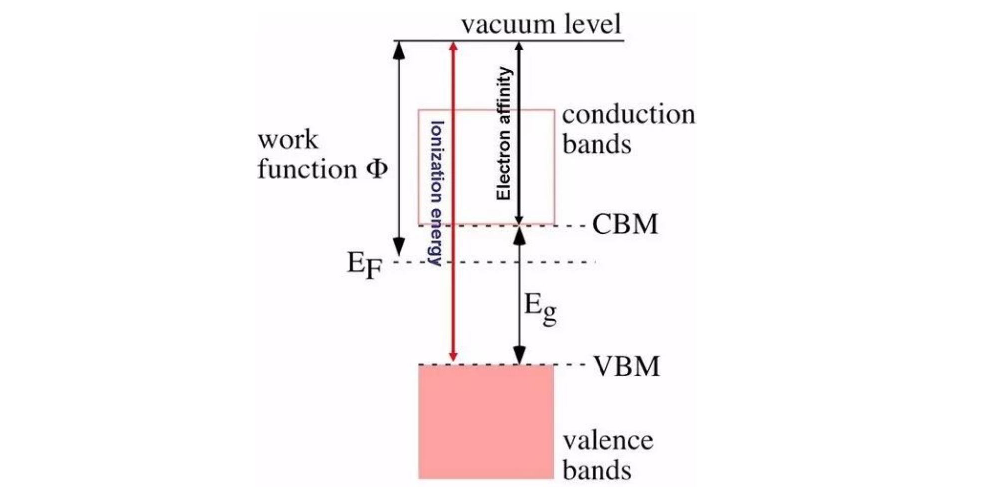

功函数（work function）的计算

功函数(又称功函、逸出功)是指要使一粒电子立即从固体表面中逸出,所必须提供的最小能量(通常以电子伏特为单位)。这里“立即”一词表示最终电子位置从原子尺度上远离表面但从宏观尺度上依然靠近固体。功函数不是材料体相的本征性质,更准确的说法应为材料表面的性质(比如表面暴露晶面情况和受污染程度)功函数是金属的重要属性。功函数的大小通常大概是金属自由原子电离能的二分之一。
从前面的定义中可以看出,计算功函数我们只需要得到体系的费米能级和电子所处的静电势能,然后求差即可。
费米能级的计算: VASP计算结束之后,通过命令:
grep E-fermi OUTCAR即可提取出来静电势能的计算: 通过在INCAR中添加:
LVHAR =.TRUE.这个参数。 加入这个参数,计算结束后,VASP会输出一个文件: LOCPOT文件。我们可以通过脚本,或者程序对这个文件后处理来获取静电势能。VASP的计算流程 ：(很简单)
- 1)优化获取稳定的结构, 2)将CONTCAR 复制成 POSCAR 3)在INCAR中设置单点计算: 方法1:设置NSW=1 或者0 方法2:设置IBRION = -1 方法3:直接删除INCAR中NSW这一行,采用默认值
- 4)提交任务
- 注意: 1)如果第一步计算中有保存WAVECAR,则静态计算的时候可以设置:ISTART = 2 读取一下,以便节省计算时间; 2)如果没有保存,直接算即可。不要在读不读WAVECAR这个问题上瞎操心。 3) 电子步数的默认值是40,如果你的体系不容易收敛,计算的时候请设置一个较大的NELM值,比如 NELM = 500
后处理方法-1:p4vasp
4.1 导入数据: 1)Linux系统下面,进入计算的目录直接敲命令: p4v & 即可 (我们稍微等下Windows用户的操作,后面可视化过程是一样的) 2)Windows下面,首先要将计算生成的LOCPOT文件保存到本地电脑上。 注意:有时候这个文件可能会很大,下载的时候比较蛋疼,不想下载的话等待下节的讲解。 3)打开p4vasp并导入LOCPOT文件:file --> loadsystem,然后找到LOCPOT所在的目录,点解导入.
4.2 开始可视化:(Linux,Windows都一样了) Electronic –> Local potential
点击下图中的 show,会出现三个方向让你选择,一般都是沿着 z 方向的,按照红色箭头点下即可。
4.3 导出数据 还记得前面我们讲的DOS的计算吗?我们求d band center,电子数目积分的时候将数据导出来了。同样,图中组成曲线的点的坐标我们也可以导出来。 点击: Graph-->Export
4.4 分析数据 有了数据,我们就底气十足,什么都不怕了。用Notepad ++ 打开cu.dat 文件;
和DOS计算导出来的结果有几分神似。数据共有三部分,每两部分之间由空行分开。
这三部分的顺序,如下图 :(也可以自己plot一下立马得知)：
我们从图中可以看出,基本上在10-18的这个区间范围,三条线的数据差不多是一样的。静电势能的话,可以通过红线(Average那条线),也就是第二部分来获取。可以查看下14-15 A时红色曲线的数值。
由此,我们可以得出静电势能为: 4.835或者4.836 eV （估计值即可）
获取费米能级 ：0.0277eV
套公式,功函数为: 4.84-0.03 = 4.81 eV
后处理方法x：matlab，origin还是matplotlib什么的，知道原理自己写scripts吧
影响功函数计算的因素 ：
INCAR中的参数 ：
计算功函数的参数:
LVHAR =.TRUE.加入这一参数时,VASP只将静电势能写入LOCPOT文件中。 在早期的VASP版本中,静电势的写入是通过设置LVTOT这个参数的。 在5.2.12版本之后,如果你设置LVTOT= .TRUE.,那么静电势,交换相关势都会写入到LVTOT中。由于我们计算功函数的时候,只需要静电势这一部分。所以,如果你用的是5. 2.12版本之后的VASP,设置LVHAR= .TRUE.即可使用LVTOT这个参数,由于加入了交换相关势,曲线变得不再那么光滑,并且与LVHAR的结果有一定的偏差。所以,在计算功函数的时候,LVHAR这个参数一定要注意。
真空层的厚度及修改 :
真空层的厚度:指的是slab在z(或者c)方向上的长度减去表面原子在z方向的坐标。
由于slab模型中的原子部分就在那边乖乖地待着,我们只需改变slab中晶格常数在z或者c方向的长度即可。
注意：结构中坐标是否为分数坐标: Direct
转换脚本（from bigbrosci）
#!/usr/bin/env python
# -*- coding: utf-8 -*-
#Convert direc coordiation to cartesian Writen By Qiang
import sys
script, file_to_be_converted = sys.argv
print """
###################################
# #
#for VASP 5.2 or higher versions #
# #
###################################
"""
file_read = open(file_to_be_converted, 'r')
line = file_read.readlines()
a1 = float(line[2].split()[0])
a2 = float(line[3].split()[0])
a3 = float(line[4].split()[0])
b1 = float(line[2].split()[1])
b2 = float(line[3].split()[1])
b3 = float(line[4].split()[1])
z1 = float(line[2].split()[2])
z2 = float(line[3].split()[2])
z3 = float(line[4].split()[2])
num_atoms = sum([int(x) for x in line[6].split()])
x_cartesian = []
y_cartesian = []
z_cartesian = []
tf = []
start_num = 9 # Default: With Selected T T T, coordination starts from line 9
def convert():
for i in range(start_num, num_atoms + start_num):
x_cartesian.append(float(line[i].split()[0]) * a1 + float(line[i].split()[1]) * a2 + float(line[i].split()[2]) * a3)
y_cartesian.append(float(line[i].split()[0]) * b1 + float(line[i].split()[1]) * b2 + float(line[i].split()[2]) * b3)
z_cartesian.append(float(line[i].split()[0]) * z1 + float(line[i].split()[1]) * z2 + float(line[i].split()[2]) * z3)
if len(line[i].split()) > 3: # if T T T exist, there are more than 3 elements in the list line[i].split()
tf.append((line[i].split()[3]))
else:
tf.append(' ') # if there is no T T T, use space instead.
file_out = open(file_to_be_converted+'_C', 'w')
for i in range(0,7):
file_out.write(line[i].rstrip() + '\n') # first 7 lines are kept the same
if 'S' in line[7]:
file_out.write(line[7].rstrip()+ '\n') # if T T T exists, write the Selective line
file_out.write('Cartesian' + '\n') # Coordination system is Cartesian now.
for i in range(0,len(x_cartesian)):
file_out.write("%+-3.10f %+-3.10f %+-3.10f %s %s %s\n"
%(x_cartesian[i], y_cartesian[i], z_cartesian[i], tf[i], tf[i], tf[i]))
file_out.close()
print '-----------------------------------------------------\n'
print 'POSCAR with Cartesian Coordiations is named as %s_C\n' %(file_to_be_converted)
print '-----------------------------------------------------\n'
if line[7][0] == 'S' or line[7][0] == 's': # # With Selected T T T, coordination starts from line 9
start_num = 9
if line[8][0] == 'D' or line[8][0] == 'd':
print """
This POSCAR has Direct Coordinations, Conversion is starting....
"""
convert()
elif line[8][0] == 'C' or line[8][0] == 'c':
print """
This POSCAR has Cartesian Coordinations! Process is aborted!
"""
else :
print """
----------------------------------------------------
Pay Attetion! There is no TTT in coordinations part!
----------------------------------------------------
"""
start_num = 8 # without Selected, No T T T , coordination starts from line 8
if line[7][0] == 'D' or line[7][0] == 'd':
print """
This POSCAR has Direct Coordinations, Contersion starts....
"""
convert()
elif line[7][0] == 'C' or line[7][0] == 'c':
print """
%%%%%%%%%%%%%%%%%%%%%%%%%%%%%%%%%%%%%%%%%%%%%%%
This POSCAR has Cartesian Coordinations already!
Process is aborted!
%%%%%%%%%%%%%%%%%%%%%%%%%%%%%%%%%%%%%%%%%%%%%%
"""
file_read.close()
完成转化后,就可以批量处理Cartesian坐标的POSCAR
head -n 5 $i/POSCAR 获取POSCAAR前5行中的内容
后面跟着一个 |tail -n 1, 这个命令的意思是,显示前面5行中的最后一行。 head 和tail 这两个命令之间用 | (pipe)连在一起,表示将前面head命令的结果传递给后面的tail命令。
for i in *; do head -n 5 $i/POSCAR | tail -n 1 ; done
真空能级,费米能级以及功函数随真空层厚度的变化:
理论补充：http://pubs.rsc.org/is/content/articlehtml/2016/mh/c5mh00160a